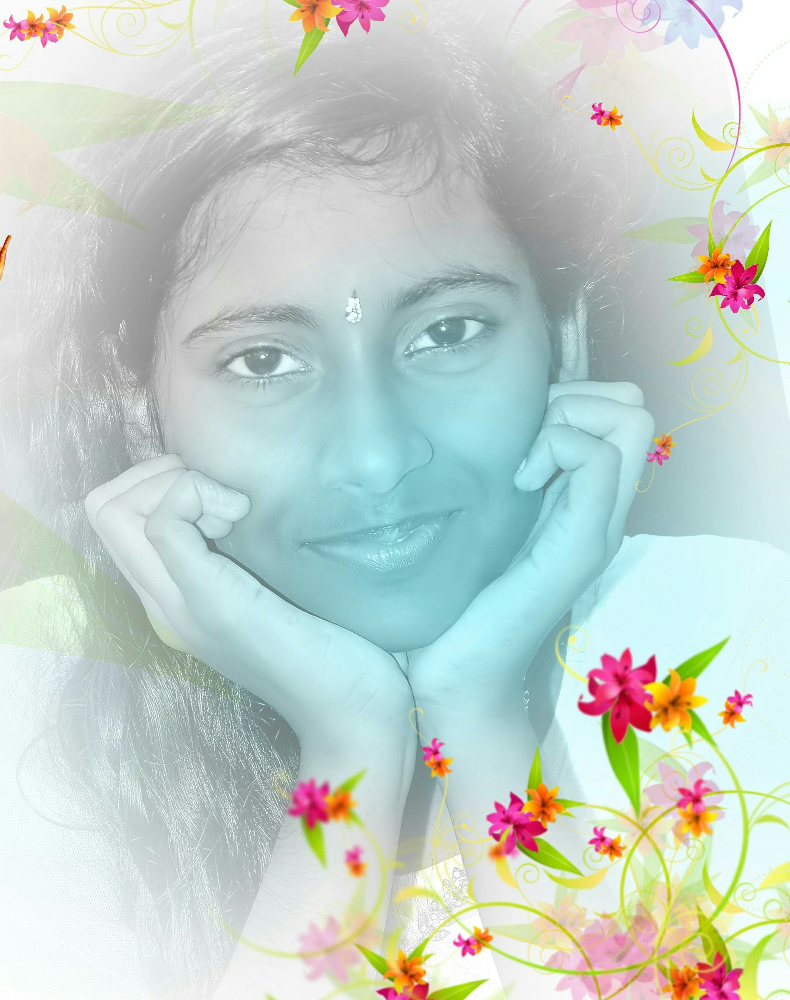

Eluri Harshitha

About me
I am a hardworking individual, learner and persuing btech in Mechanical, Materials and Aerospace Engineering.
Education
- SSC, 10th (2019) - Kairali School, Devarapalli - 10 CGPA
- Intermediate (2019-2021)- Sri Chaitanya Junior College, Visakhapatnam - 98.2%
- Btech in MMAE (2021-2025) - Indian Institute of Technology, Dharwad - 89.5 CGPA (till the end of 4th semester)
Work Experience
- Teaching experience for 1 month
- Done training in Steel Plant, Visakhapatnam for 1 month
- Student Mentor during Engineering
- Dance club Secretary
- Parsec, Marketing and Logistics team member
- Volunteered for tree plantation, road cleanliness, blood donation programmes as a NSS volunteer
- Spicmacy event volunteer, event
Skills
- Autocad
- Solid Works
- Matlab
- C++
- Kuchipudi Dancer
Awards and Achievements
- Student of the year award, 2018 by LIC Organization
- State 2nd rank and silver medal in Society for Advancement of Science and Technology, Olympiad 2015-16
- District 3rd rank and bronze medal in Society for Advancement of Science and Technology, Olympiad 2016-17
- Best Teacher of the day certificate in 2017, 2018 and 2019
- 3rd position in Solo dance competition in General Championship for Dance,2023
- 1st position in duet dance competition in General Championship for Dance,2023
- Performed duet and group dance in IIT Madras, for Inter IIT Cultural Meet 5.0